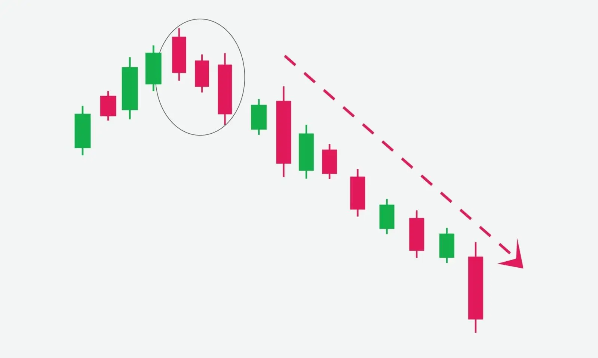

Das Muster der "Drei schwarzen Raben" ist ein Handelsmuster, das das Ende eines Aufwärtstrends im
Markt und den Beginn eines Abwärtstrends signalisiert. Dieses Muster besteht aus drei abwärts
gerichteten Kerzen. Jede Kerze wird als "Schwarzer Rabe" bezeichnet.
